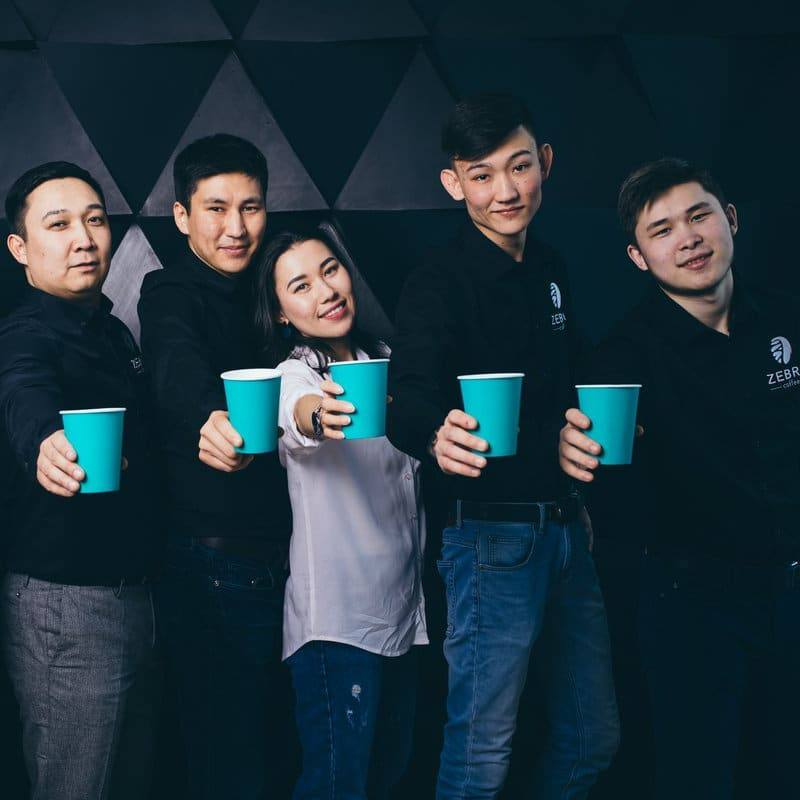
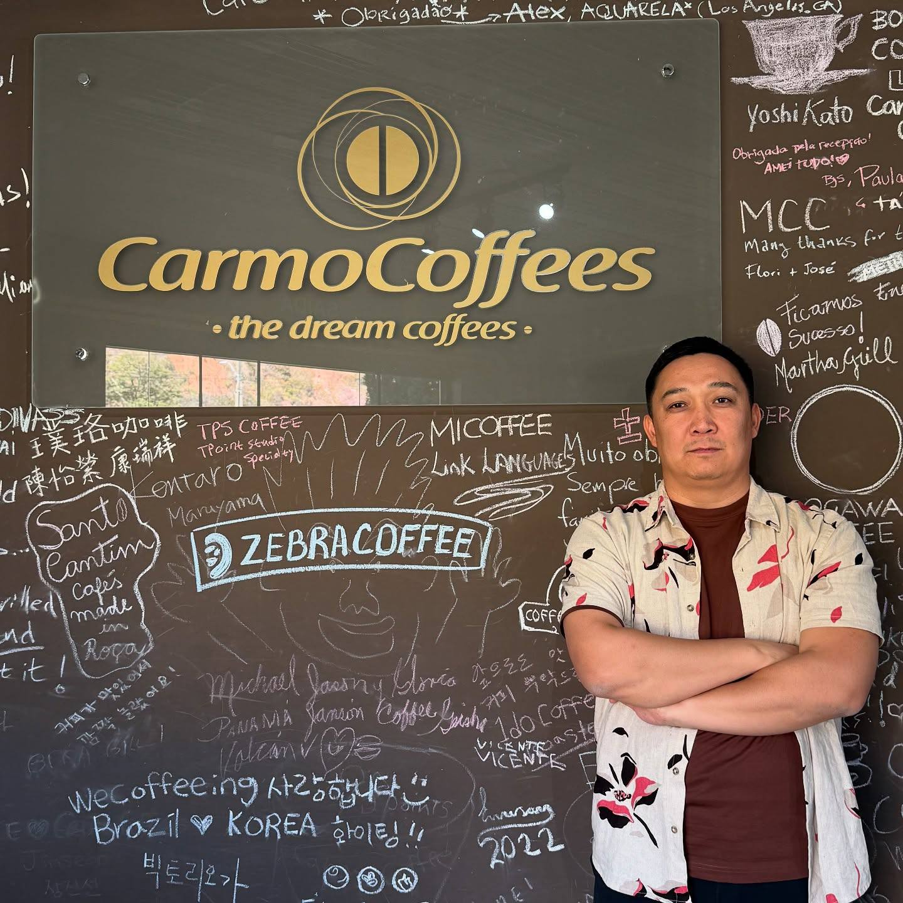
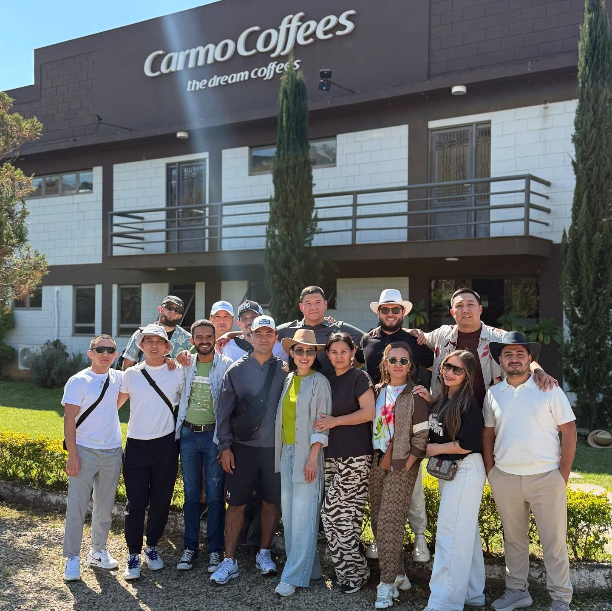
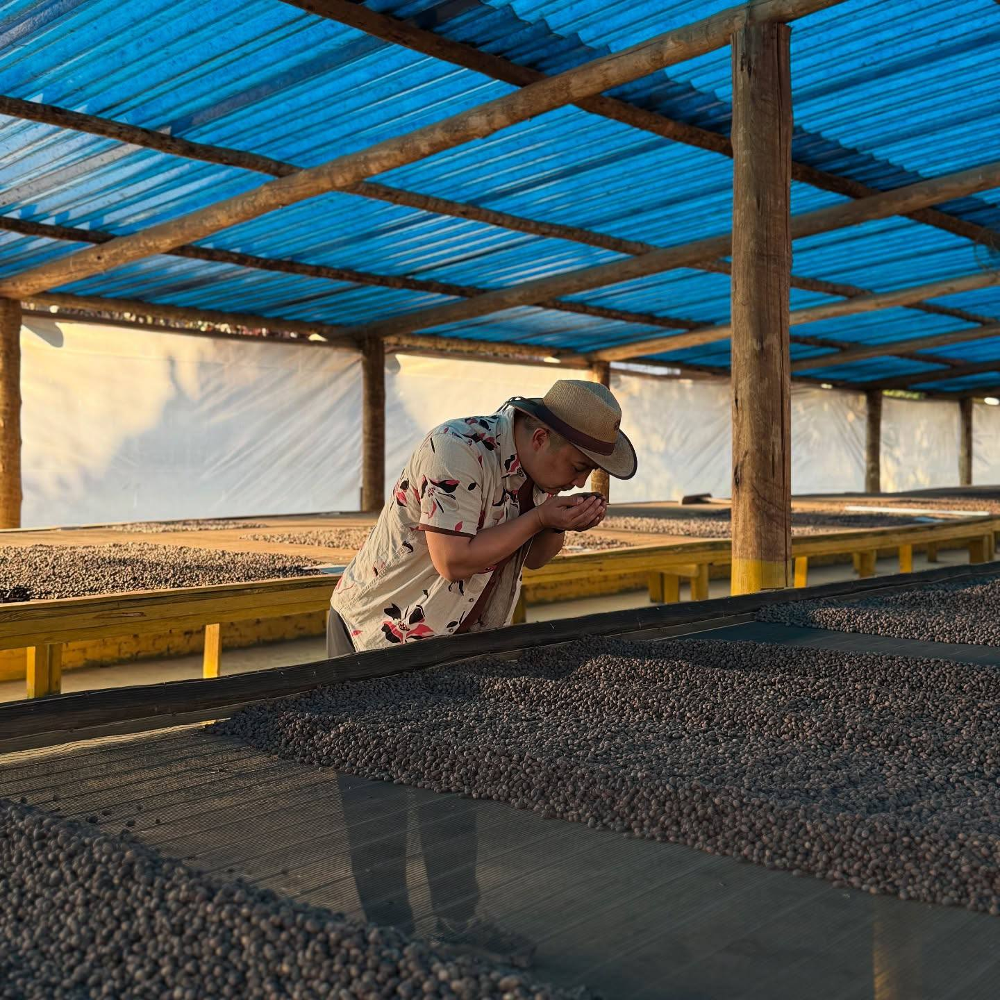
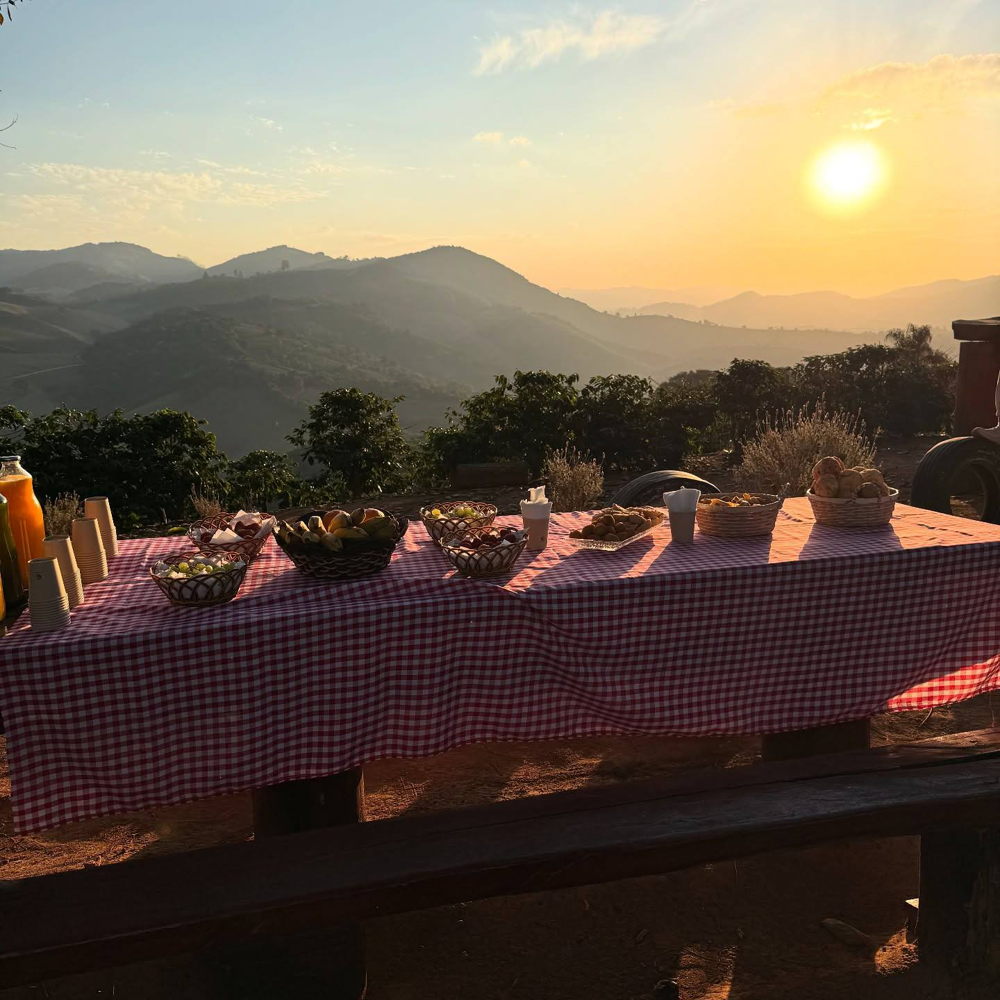
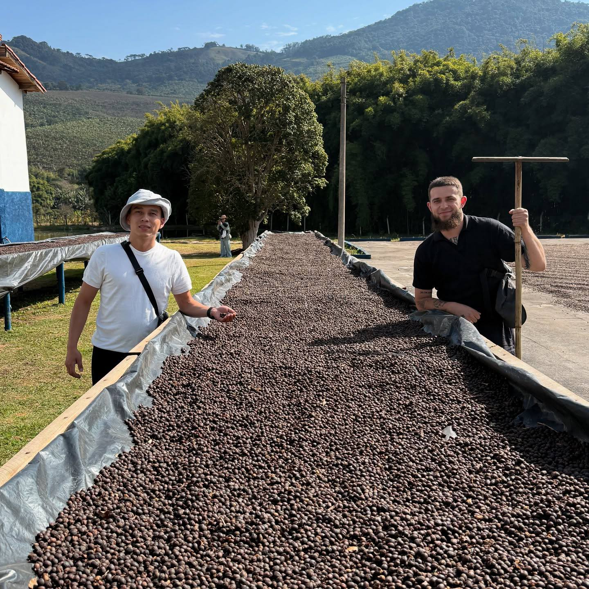
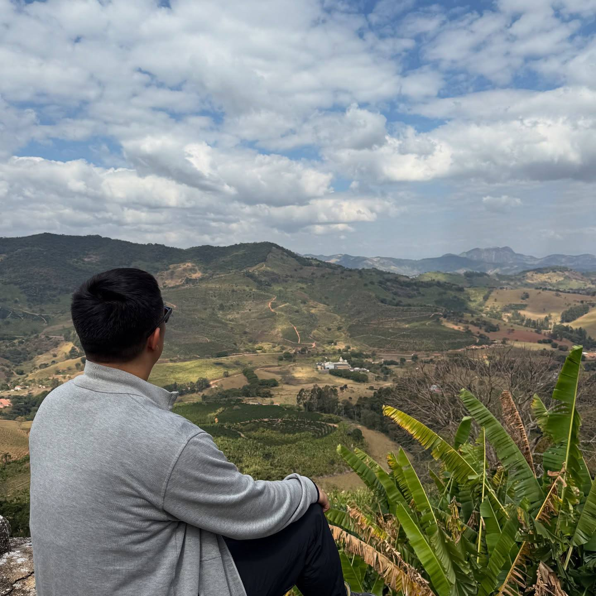
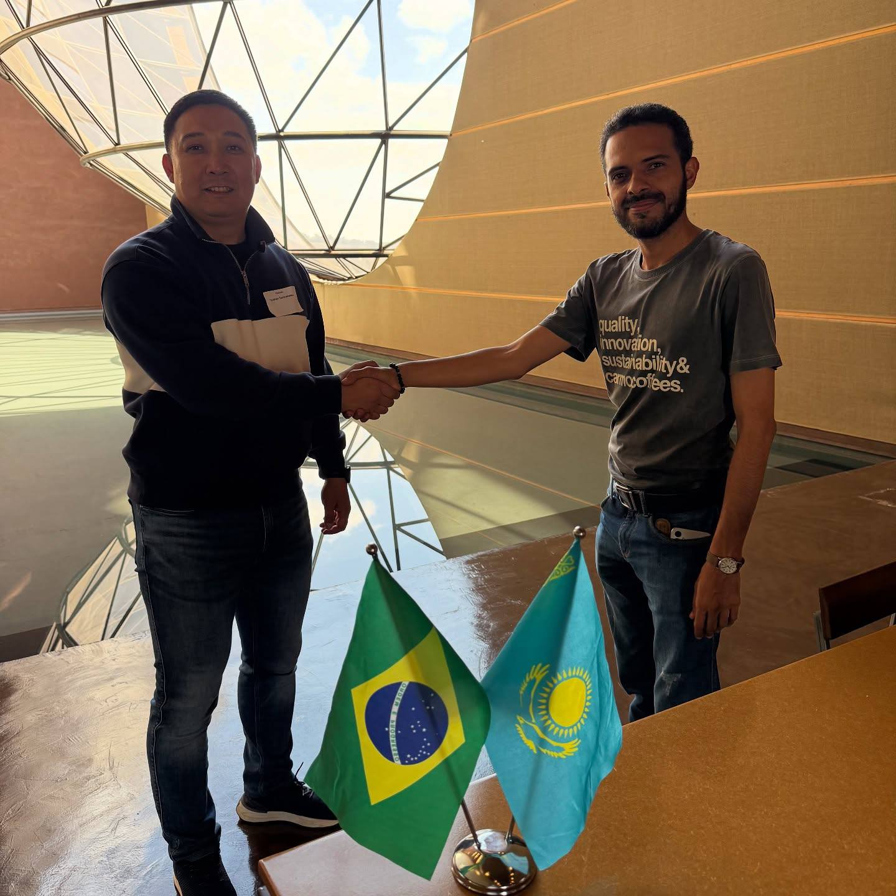
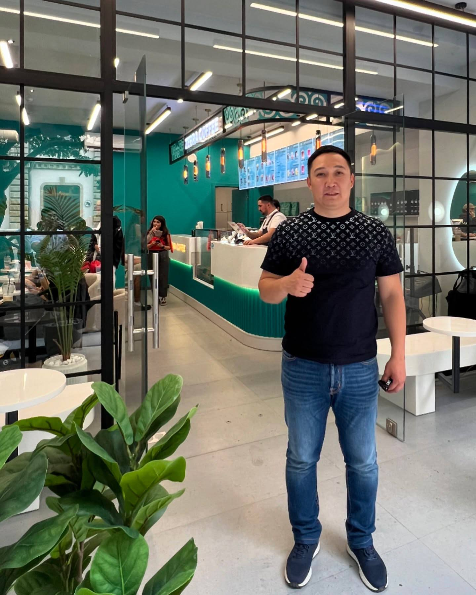
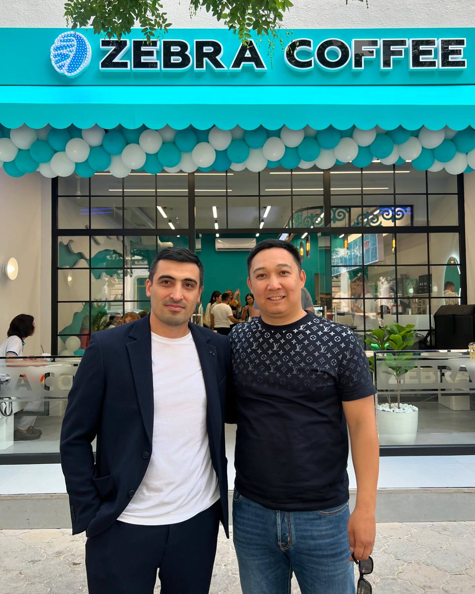

Полная история зарождения международной сети Zebra Coffee: от студенческого опыта в США до создания бренда с сотней кофеен и безупречными стандартами утреннего сервиса.

История Zebra Coffee началась в США, где Ержан Тастамбеков во время обучения познакомился с западной культурой кофе «to go» (на вынос). Он наблюдал за тем, как тысячи людей начинают свой день с ароматной чашки кофе, а кофейни становятся центром притяжения мегаполиса.
Вернувшись в Казахстан, Ержан поставил перед собой амбициозную цель — создать отечественную сеть кофеен с мировыми стандартами качества, доступной ценой и высокой скоростью обслуживания.

На первых этапах Ержан самостоятельно погружался во все процессы — от выбора и закупки оборудования до тестирования рецептур и настройки помола.
Главным приоритетом стало формирование команды единомышленников, разделяющих страсть к идеальному сервису и горячему вниманию к каждому гостю.

Название «Zebra Coffee» родилось из философии гармонии: контраст насыщенного черного эспрессо и свежего белого молока. Символ зебры отражает динамику, энергию и яркость жизни.
Первая островная кофейня в Астане сразу привлекла внимание гостей своей эстетикой и вкусом. Утренний сервис был доведен до автоматизма — бариста готовили напитки за считанные минуты, не теряя ни капли качества.

Каждая точка Zebra Coffee проектировалась как пространство, где гость может мгновенно перезагрузиться, взять любимый напиток и почувствовать искреннее тепло.
Дизайн, освещение, удобная навигация и фирменные стаканчики стали узнаваемой визитной карточкой сети по всему городу.

В Zebra Coffee используется только 100% арабика свежей обжарки. Ержан лично контролировал выбор поставщиков зеленого зерна и формулу обжарки, чтобы добиваться стабильного профиля вкуса во всех точках.
Каждый бариста сети проходит жесткий отбор и обучение в Академии Zebra Coffee, овладевая искусством латте-арта и работы с оборудованием высочайшего класса.

Мастерство бариста — фундамент успеха Zebra Coffee. В собственной академии сотрудники обучаются правильной экстракции, взбиванию идеальной микропены и тонкостям общения с клиентами.
Благодаря этому любой гость получает абсолютно одинаковый, превосходный вкус кофе в любой точке сети.

Для ускорения работы и повышения лояльности команда разработала собственное мобильное приложение с программой Zebra Coins. Гости получили возможность накапливать кешбэк до 10% и оплачивать покупки прямо со смартфона.
Партнерство с передовыми IT-системами вроде Clockster позволило оптимизировать графики сотрудников и обеспечить идеальный утренний поток без очередей.

Внедрение цифровых сервисов позволило сократить время ожидания заказа до минимума, сохраняя персональный подход к каждому покупателю.
Технологичность стала одной из ключевых причин, почему сеть завоевала признание среди молодой и активной аудитории.

Запуск франчайзинга в 2020 году стал мощным драйвером роста. Бренд вышел за пределы Казахстана, открыв кофейни в Узбекистане и других странах.
Сегодня Zebra Coffee — это более 100 успешных локаций, сильное комьюнити и бренд, который продолжает покорять новые города, сохраняя семейный уют и внимание к каждому гостю.

Zebra Coffee не останавливается на достигнутом: в планах компании дальше расширять географию присутствия, обновлять сезонные меню и развивать экологические инициативы.
История, начавшаяся с одной мечты, сегодня объединяет сотни тысяч любителей качественного кофе каждый день.
Публикации в ведущих деловых и аналитических изданиях